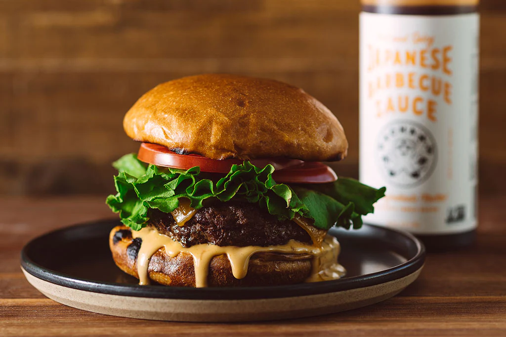

A quintessential American food, burger evolved from the German Deutsches beefsteak, according to the New York Times food critic Mimi Sheraton. Its other name (hamburger) is a result of the fact that many German immigrants originally came from the port of Hamburg. Burger is a succulent dish consisting of, ideally, medium-rare seared beef patties tucked in fresh, lightly toasted buns, accompanied by onion slices and ketchup or Dijon mustard.
Meal prep time : 40 minutes
Servings : 4